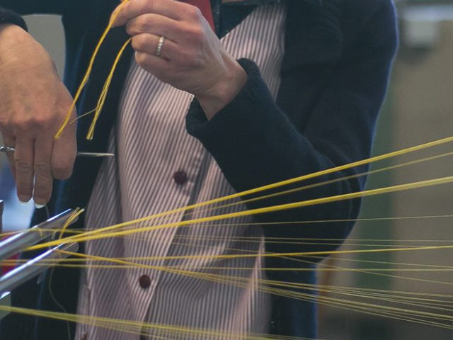
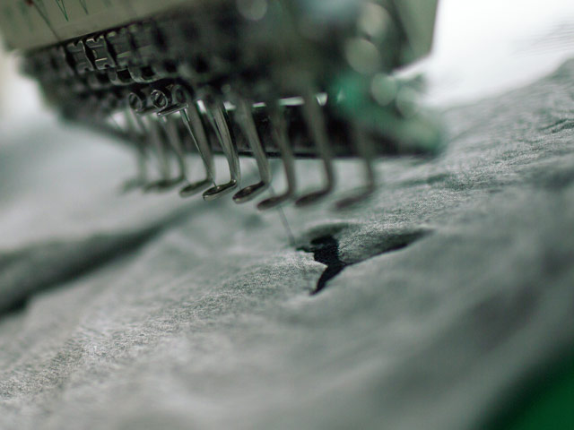

Employee commitment
Micro Fibre Group owes its strength to its employees and the synergy of their complementary skills, enabling it to offer the best products and the best services to its customers. Micro Fibre Group fosters innovative professional careers, encouraging mobility, skills development, versatility and career advancement. The company implements safe working conditions that promote everyone’s personal development and fulfilment.
Social commitment
With establishments in several regions of France, Micro Fibre Group invests in local and regional development. The company is a signatory of the youth membership charter, hosts interns from the “second chance school” (young people who have left the education system), and offers vocational training hours for public contracts. Through sponsorship, it also supports local, regional or national sports and/or charity actions.

Sustainable development
All Micro Fibre Group’s actions and decisions regarding its suppliers, customers and employees are guided by a pro-active Sustainable Development approach. General implementation of the OEKO-TEX label, compliance with REACH legislation, promotion of partnerships with suppliers that have a similar approach, recycling chains for used textiles (100% safe collection, total recovery, transparency and traceability), reduction in energy consumption and waste production.
Compliance
Micro Fibre Group has introduced a set of rules and procedures that ensure compliance with the relevant standards, and the values and ethical thinking of its directors. A Business Ethics and Conduct Code sets out the principles that apply to the company; the anti-corruption policy is part of an absolute zero tolerance principle; a mutual Conduct Guide governs the principles of supplier relations, all in line with ethical rules, continuous improvement and sustainable development.
